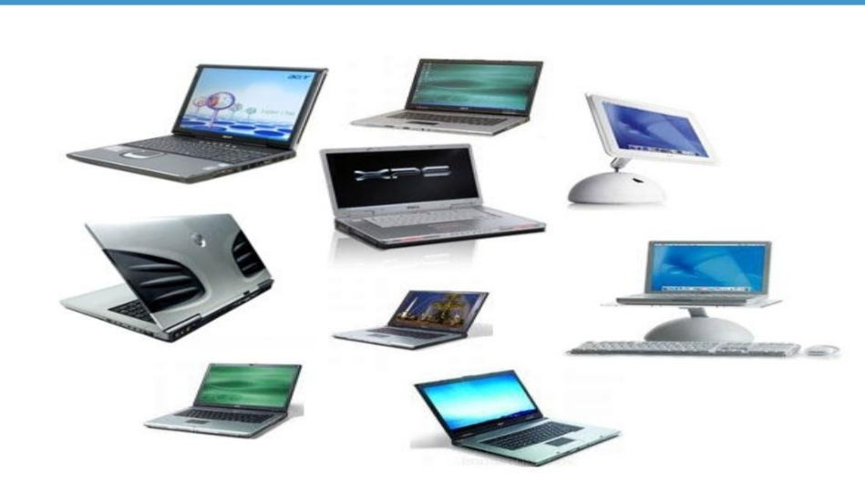

NOWADAYS
Nowadays using computers is more and more essential. We can't do without them, and you don't have to be an expert to use one, as using a computer is easier and easier all the time. You don't need to be rich either, as computers are also becoming cheaper and cheaper as time goes on. Also, if you are studying, the Internet is becoming more and more important as a place to find information. This used to take a long time, but the latest machines are a great improvement. The faster the computer, the faster it works. However, protecting computers from viruses is becoming more and more difficult as the people who invent viruses are becoming cleverer and cleverer. The Internet has become a dangerous place, so it is more and more up-to-date to be very careful when we use computers.
- 


<><><><><><>Laptops today <><><><><><><><><><>Personal Computers <><><><><><><><><><><><> Mini PC<><><><><><><><><>
Computers
Nowadays , computers had become one of the part in our daily life.
Computers can make our jobs become easier . They can be used for communicational purposes (internet),
to store and calculate data and to write up massive documents multiple times while only needing to write it up once.